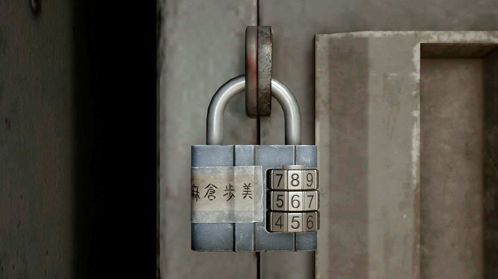

School Locker Codes — Full Walkthrough
Here's every locker combination you need in the Ebisugaoka Middle School section, plus where to find the Locker Room Key, how to decode the clues, and what each locker rewards. Ayumi's code changes by difficulty; the others are static and worth opening for useful items.
Quick Reference — All Locker Codes
| Student | Story | Hard | Lost in the Fog | What you get |
|---|---|---|---|---|
| Asakura Ayumi | 534 ( "SEA" ) | 865 ( "BUS" ) | 399 ( "EGG" ) | Key Cabinet Key (progression) |
| Aoi Takeshi | 401 ( "AOI" ) | 401 | 401 | Origami note for Suga's clue |
| Suga Yosie | 505 ( "SOS" ) | 505 | 505 | School Bag (+1 inventory slot) |
| Tsuchiya Taiko (TT) | 377 | 377 | 377 | Wolf Omamori (extra damage with high-durability weapons) |
Ayumi's locker is the only mandatory one for story progression; the others are optional but recommended.
Where to Start & What to Pick Up
- Locker Room Key: In the Old Annex, left-side classroom, on Ayumi's desk (after opening the Old Annex Main Gate). In NG+, the room is already open. Use the key to access the locker rooms.
- Clue notes: Search the second floor classrooms and the Old Annex for Origami notes that teach the letter→number cipher used by the students.
- Rooms: Aoi's locker is in the boys' room; Ayumi, Suga, and TT are in the girls' room.
Decoding the Notes (Letter → Number)
The kids encode names or words as three digits. You'll find notes like "same as his name: AOI" → 401, or "looks like a cry for help" → SOS → 505. Ayumi's changes by difficulty: SEA → 534, BUS → 865, EGG → 399.
Step-by-Step Route (Fastest)
- Grab the Locker Room Key in the Old Annex (Ayumi's desk).
- Open the locker rooms. Start with the boys' room: unlock Aoi 401 and read the Origami note inside.
- Go to the girls' room: unlock Suga 505 (get the School Bag), then TT 377 (get the Wolf Omamori).
- Finally, unlock Ayumi using your difficulty's code — 534 (Story), 865 (Hard), or 399 (Fog) — to get the Key Cabinet Key.
- Return to the faculty/storage room, open the cabinet, grab the gate key, and rejoin your friends to leave the school.
Pro Tips & Common Mistakes
- Only Ayumi is mandatory. If you're rushing the story, open hers first.
- Inventory space: Don't skip Suga's locker; +1 slot is a big quality-of-life upgrade.
- Combat ambush: After TT's locker, be ready for a fight before you leave the room.
- Cipher confusion: If the digits don't make sense, re-check the clue wording; it always resolves to a 3-letter word mapped to three digits.